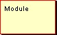
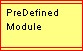
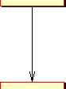
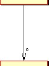
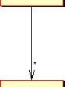
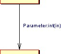
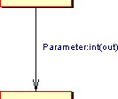
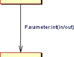
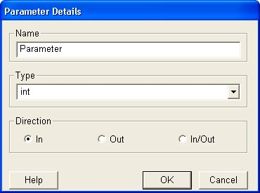
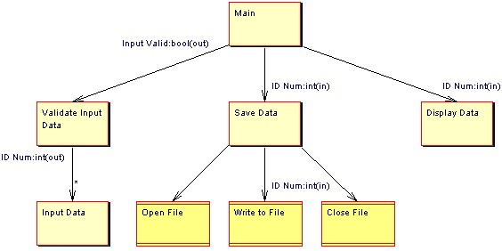

|
|
Structure Chart
A structure chart allows a graphical representation of a computer
program to be modeled. Unlike flow charts, structure charts show how
different modules (functions) within a program interact and the data
that is passed between them. Structure charts are often useful in
identifying unnecessary complexity in large none object-oriented systems
where re-use between components is common.
To view the main multi-CASE help page click
here
|
|
|
|

Modules
Definition: A module represents a function or a procedure within a
computer program, i.e. a sequence of operations that are grouped together into a
named reusable component.
Representation: Modules are represented by rectangular boxes with red
borders. The name of the module is shown within the rectangle as a textual
label.


Creation: A module is added by right clicking on the structure chart
diagram editor or on the model icon within the project tree and selecting the
"Add Module" option from the menu. Position the module outline where you wish it
to be placed on the diagram and left click, enter the name when prompted and
click "OK".
Rules: Modules should be called by at least one other module (except
for the top level main module).
Operations: Move Forwards/Backwards, Bring to Front, Send to Back,
Delete, Add Call To Module, Change Module/Text Color, Edit Module
Annotation/Name.
PreDefined Modules
Definition: A predefined module represents a function or a procedure
within a computer program that has been developed externally from the main
program, e.g. a function from a shared library.
Representation: Predefined Modules are represented by rectangular
boxes with red borders that are double at the top and bottom. The name of
the module is shown within the rectangle as a textual label.

Creation: A predefined module is added by right clicking on the
structure chart diagram editor or on the model icon within the project tree and
selecting the "Add PreDefined Module" option from the menu. Position the module
outline where you wish it to be placed on the diagram and left click, enter the
name when prompted and click "OK".
Rules: PreDefined Modules should be called by at least one other
module.
Operations: Move Forwards/Backwards, Bring to Front, Send to Back,
Delete, Add Call To Module, Change Module/Text Color, Edit Module
Annotation/Name.
Module Calls
Definition: A module call is used to show that, at some point within
its execution, a module makes a call to another module. Module calls can
have associated parameters.
Representation: Module calls are represented by a solid line with an
arrow that indicates the direction of the call. There are three variations of a
module call, i) an arrow representing a standard call, ii) an arrow with an
attached (o) representing an optional call, and iii) an arrow with an attached
asterisk (*) representing an iterative call. i.e.



Creation: To create a module call right click on the module you wish
to be the source and select "Add Module Call" from the menu. Now left click on
the module you wish to be the destination, the call will then be created.
Rules: Module calls can only link modules.
Operations: Move Forwards/Backwards, Bring to Front, Send to Back,
Delete, Add/Remove Link Point, Add/Modify/Delete Parameter, Make call
Mandatory/Optional/Iterative, Set Text Color, Change Call Color and Edit Call
Annotation.
Parameters
Definition: Parameters describe the data that must be passed to a
function or procedure during a module call.
Representation: Parameters are represented by labels attached to a
module call. They have three parts, which are the parameter name, the data type
and the direction definition.



Creation: To add a parameter right click on the module call with which
the parameter is to be associated and select the 'Add Parameter' option from the
menu. This produces a dialogue window from which you can specify the name, type
and direction of the parameter. e.g.

Rules: Parameters Should be given a name when they are created.
Operations: Move Forwards/Backwards, Bring to Front, Send to Back,
Add/Modify/Delete Parameter, Set Text Color, Change Call Color, Edit Call
Annotation.
Example
Below is a simple example of a structure chart.
